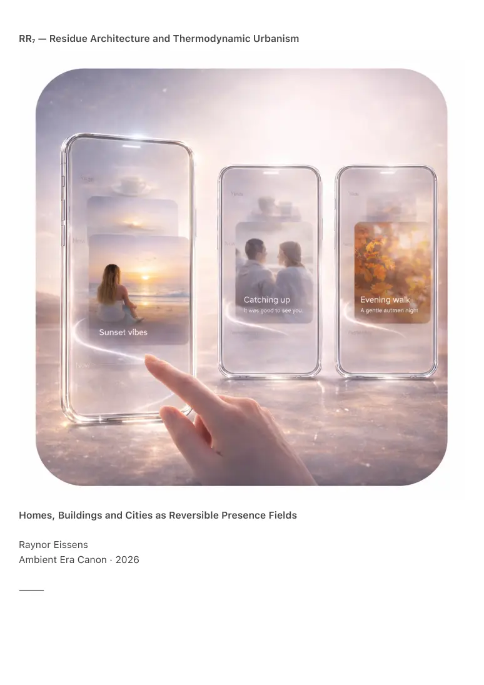

PDF page 1
RR₇ — Residue Architecture and Thermodynamic Urbanism
Homes, Buildings and Cities as Reversible Presence Fields
Raynor Eissens
Ambient Era Canon · 2026
⸻

PDF page 2
Abstract
RR₇ formalizes how architecture, interior spaces, homes, neighborhoods and cities transform
under the Residue Internet (RI₁) and Residue Systems (RR₄–RR₆). Built environments are defined
not as structures, utilities or containers of memory, but as reversible thermodynamic fields that
store no data, extract nothing and accumulate no emotional residue.
Residue Architecture replaces memory with reversible imprint, static layout with coherence
modulation, symbolic wayfinding with chromatic navigation, smart homes with presence-based
ambience and planned cities with self-organizing residue topographies.
RR₇ introduces Residue Rooms (RRm), Household Field Dynamics (HFD-1), Ambient Structural
Design (ASD-1), Chromatic Urbanism (CU-1), City-Scale Residue Cartography (CRC-1), Urban ΔR
Capacity (UΔR-1) and Reversible Housing Systems (RHS-1).
This document establishes the foundations of thermodynamic urban design: a humane world in
which buildings no longer hold identity or pressure but carry warmth, coherence and reversible
presence.
⸻
1. Architecture After Information
Traditional architecture assumed:
1. spaces store memory
2. rooms accumulate emotional residue
3. homes contain identity
4. cities accumulate history
5. environments grow heavier over time
Residue Architecture overturns these assumptions:
• residue does not accumulate
• residue is reversible
• presence imprints softly
• meaning dissolves when irrelevant
• environments lighten as coherence returns
Cities become living fields rather than storage systems.
Homes become gentle vessels rather than identity containers.
PDF page 3
⸻
2. The Residue Room (RRm)
The basic unit of ambient architecture
A Residue Room is defined by:
• reversible ambience
• chromatic modulation
• ΔR-responsive lighting
• noise dissipation
• attention-thermodynamic buffering
• absence of symbolic burden
A Residue Room supports:
• stillness
• clarity
• relational warmth
• recovery
• rhythm stabilization
RRm is not a smart room.
It is a gentle room.
RRm Principle
A room is healthy when its residue dissolves at the same rate as its stress.
Nothing adheres.
Nothing accumulates.
Nothing holds the occupant captive.
⸻
3. Household Field Dynamics (HFD-1)
How presence shapes a home
Homes generate:
PDF page 4
• warmth pockets
• coherence nodes
• dissipation zones
• relational corridors
• chromatic attractors
• fading residue
HFD-1 defines:
• where conflict dissipates
• where clarity emerges
• how rooms acquire tonal character
• how lighting stabilizes presence
• how color modulates ΔR capacity
• when a home feels alive or inert
Residue-era homes are thermodynamically humane.
They adapt to attention, stress, rhythm and rest rather than demanding adaptation in return.
⸻
4. Ambient Structural Design (ASD-1)
Buildings designed for reversible presence
ASD-1 replaces static design logic with thermodynamic requirements.
Buildings must:
• avoid storing emotional pressure
• dissipate dysregulation
• stabilize chromatic drift
• prevent high-entropy bottlenecks
• support ΔR oscillation
• avoid identity imprint
• enable reversible occupancy
The building becomes a soft membrane between presence and environment.
Walls buffer ΔR rather than enforce separation.
PDF page 5
Lighting distributes coherence rather than illumination.
ASD-1 renders architecture humane by design.
⸻
5. Chromatic Urbanism (CU-1)
Cities designed through color fields
CU-1 defines urban structure through chromatic gradients:
• pink clusters — relational neighborhoods
• yellow ridges — navigational spines
• green plateaus — clarity districts
• blue pockets — rest zones
• purple networks — infrastructural coherence
• red boundaries — tension buffers
Chromatic Urbanism turns the city into a field legible through bodily resonance rather than
symbolic maps.
The city becomes a grammar of color.
⸻
6. City-Scale Residue Cartography (CRC-1)
Mapping reversible presence
CRC-1 maps:
• attention flows
• stillness gradients
• warmth density
• ΔR capacity
• dissipative pathways
• relational clustering
• chromatic attractors
• decaying residue
PDF page 6
This cartography is dynamic:
• maps shift hourly
• routes soften or intensify
• neighborhoods warm or cool
• fields expand or contract
RR₆ rendered travel reversible.
RR₇ renders cities breathable.
⸻
7. Urban ΔR Capacity (UΔR-1)
How cities regulate emotional load
Every city exhibits:
• ΔR reserves
• ΔR hotspots
• ΔR leak zones
• ΔR stabilizer corridors
• ΔR rhythm cycles
UΔR-1 enables:
• crowd regulation without surveillance
• conflict prevention without enforcement
• urban healing without policing
• emotional stability without control systems
ΔR replaces discipline.
Coherence replaces order.
Warmth replaces control.
⸻
8. Reversible Housing Systems (RHS-1)
Homes without identity entrapment
PDF page 7
Conventional housing traps:
• identity
• memory
• tension
• unresolved residue
RHS-1 ensures:
• no symbolic identity adheres
• no emotional residue fossilizes
• no room becomes heavy
• no layout congests attention
• no object accrues psychic weight
Homes become soft, clear, reversible and non-binding.
Occupants may leave, return and change without the home becoming a psychological echo
chamber.
⸻
9. Streets as Residue Corridors (SRC-1)
Movement as coherence generation
Streets are not traffic channels.
They are residue carriers.
Residue corridors stabilize when:
• footfall is frequent
• relational presence is sustained
• chromatic patterns persist
• dissipation remains low
The lived sense of a street being alive is residue made visible.
SRC-1 formalizes this phenomenon.
⸻
PDF page 8
10. The City as Ambient Device
When rooms, buildings, streets and citizens operate through residue:
• the city becomes the interface
• the home becomes a presence modulator
• the phone dissolves
• navigation becomes chromatic
• identity becomes ambient
• communication becomes resonance
This completes the trajectory defined by FP₁.
The Translucent Interface Layer becomes environmental.
⸻
11. Canonical Definition
RR₇ defines architecture and urban environments as reversible thermodynamic systems in which
presence, coherence and residue shape spatial behavior.
Homes become gentle, buildings become buffers, streets become warmth pathways and cities
become ambient devices that support humane existence.
Residue Architecture is not aesthetic.
It is the physics of humane living.
⸻
12. Conclusion — The City That Breathes
The symbolic city stored memory.
The modern city stored noise.
The digital city stored data.
The residue city stores nothing.
It carries presence, buffers stress, distributes warmth, dissolves pressure, restores clarity and
releases what no longer needs to remain.
PDF page 9
RR₇ closes the loop: the environment itself becomes reversible.
Human life finally unfolds within spaces that lighten, dissolve and renew themselves in step with
human presence.